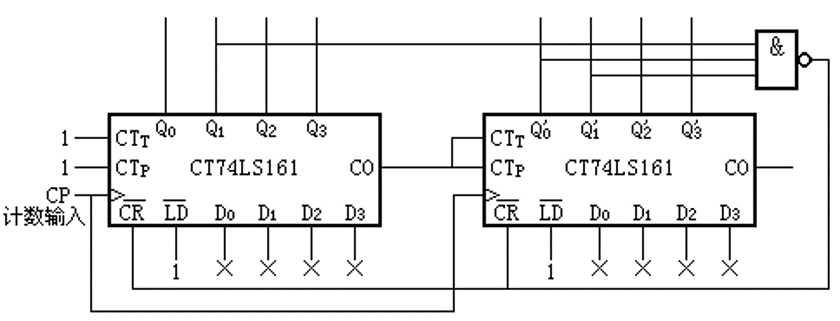

Digital Design final exam
对应的英文名词
上课ppt，重点章节回放，guahao实验指导网页，小测ppt，
时钟空翻问题
D锁存器
和时钟长度有关、D锁存器延时有关
Triggered SR 主从触发器
一次性采样问题
小的毛刺，干扰
英文电子书pdf搜索找到名词，中文纸质书理解
BCD码，gray code 余三码
SOP,POS 最大项，最小项，卡诺图化简，
高阻输出 三态门和传输门
多级电路，二级电路
门输入成本？gate input cost
PLD： programmable logic devices
PLD includes ROM,PAL,PLA
ROM：与门固定，或门阵列可编程
PAL：或门固定，与门阵列可编程


PLA：与门和或门均可编程
CPLD, FPGA, *LUT
第二章 组合逻辑电路 布尔代数(Boolean)的概念
- 变量与真值的关系，二值逻辑和门
- 三种基本运算:与或非 查蔬篇法则与电路符号，基本运算公式、规则、反演， 基本逻辑电路与其逻辑特性
-
与、或门的开、关门特点，异或的同相、反相性质 逻辑函数的化简.
-
公式化简、最小项，最大项、卡诺图化简、蕴涵项，任意项。 不同函数形式的变换及与最小项的关系 函数的五种表示形式
- 真值表、逻辑解析式、波形图、卡诺图、逻辑电路图 高阻输出(三态门，传输门)。
功能模块化设计
译码器和与或门
encoder&decoder
多路复用器（加反相器?）
加减法器：算数函数：+-*，增量函数及运算
补码运算
半加器及全加器电路设计
多位全加器，全减器设计 异或门
超前进位
进位传递与延迟，进位函数：generate，Gi，propagate
ALU设计
触发器 JK，SR, D
一次性采样问题
主从触发器和边沿触发器
脉冲触发器
SR 锁存器 R=1 S=0 复位 Q=0， R=0,S=1 置位 Q=1，
\(\overline{S}\overline{R}\) 锁存器 $$$$$$$$$
D 锁存器
模三累加器
输出只依赖状态
输出画到弧线上面
脉冲（主从）触发器
边沿触发器 edge triggered 有一次性采样问题？
J-K T flip-flops
状态图化简注意未定义状态利用态进行化简
所谓setup time就是在negedge或posedge发生前信号要有稳定的一段时间
所谓hold time就是在negedge或posedge发生后信号要有稳定的一段时间
mealy 状态是抽象的数字编号（000，001，010........111// 0,1,2,3,4,5),状态转移曲线上画的是input/output
current state到next state的状态转移就是从一个圆圈到下一个圆圈
moore 圆圈里画的是状态/输出，因为输出仅仅和当前的状态有关，不依赖于输入，输入仅仅影响状态转移，所以画在状态转移曲线上
电路延时分析
时序问题
锁存器与触发器 S-R锁存器的原理、特征表、特征方程，内部电路分析，不确定状态的原因及出现条件 D锁存器、D触发器的原理、特征表、特征方程 内部电路分析JK触发器、T触发器的行为、特征表、特征方程 霍荣馨答势盗菌触发的概念，脉冲触发的一次性采样行为的原因 锁存器和触发器的时序，建立时间、保持时间、传输延时等时序成分
各种触发器的图形符号
纹波计数器
低位的进位输出到高位的计数EN端口
和同步计数器
存储器基础：
地址线重合选择
计算所需内存位数
猝发读写？
- 存储原理：SRAM的存储单元采用稳定的触发器结构，不需要进行定期刷新操作，而DRAM的电容逐渐漏电，数据需要定期刷新以保持其正确性。
- 访问速度：SRAM的访问速度非常快，因为数据存储在触发器中，可以立即读取和写入，而DRAM的访问速度相对较慢，因为数据存储在电容中，需要经过访问晶体管的操作。
- 价格：SRAM比DRAM更快，但是更昂贵，而DRAM则更便宜但速度较慢。
- 存储方式：SRAM使用更多的电路来存储每个位，而DRAM使用一个电容器和一个晶体管来存储每个位。
-
寻址方式：DRAM需要通过行地址和列地址来寻址，而SRAM则只需要一个地址就可以了。
-
Refresh Controller and Refresh Counter（刷新控制器和刷新计数器）：
- 问题解释： 这提到了DRAM中的刷新机制。在DRAM中，由于存储单元的电荷逐渐泄漏，需要定期进行刷新，以防止数据丢失。
- 解答： 刷新控制器和刷新计数器协同工作，定期刷新存储器中的数据，确保其稳定性。
- Read and Write Operations（读和写操作）：
- 问题解释： 提到了DRAM的读和写操作，以及应用行地址和列地址的方式。
- 解答： 读操作涉及从存储单元中读取数据，写操作涉及向存储单元写入数据。行地址指定了所选行，列地址指定了所选列。这种分解地址的方式有助于定位到具体的存储单元。
- Why is the address split?（为什么地址要拆分？）：
- 问题解释： 问为什么需要将地址拆分成行地址和列地址。
- 解答： 地址拆分有助于提高存储器的定位精度。行地址用于选择特定行，而列地址用于选择行中的具体元素。这种拆分有助于提高DRAM的寻址效率。
- Why is the row address applied first?（为什么首先应用行地址？）：
- 问题解释： 询问为什么在操作中首先应用行地址。
- 解答： 行地址的应用确定了所需的行，这是存储单元的大致位置。在确定了行后，列地址用于选择行中的具体元素。这种顺序有助于提高地址的定位效率。
SRAM和DRAM的区别：
- SRAM（静态随机存取存储器）：
- 由触发器（flip-flops）构成，不需要定期刷新。
- 读写速度较快，但成本较高，密度较低。
- 通常用于高性能缓存。
- DRAM（动态随机存取存储器）：
- 由电容和晶体管构成，需要定期刷新以防止数据丢失。
- 读写速度相对较慢，但成本较低，密度较高。
- 通常用于主存储器。
总体而言，SRAM适用于需要高性能和不需要频繁刷新的场景，而DRAM适用于需要高密度存储和较低成本的场景。
画出状态机所对应的电路图：
mealy状态机的下一状态由当前状态和输入决定
可以画很多条竖线
counter 计数器的实现
接口定义：输入EN,clk，输出Q0-Q3,CO 四个D flip-flop
ripple counter是asynchronous counter，是 将一个不断自反的 FF 的输出直接或间接作为下一个 FF 的时钟脉冲。由于形成一次脉冲需要一对 0&1，所以前一个 FF 取反两次才能引起下一个 FF 取反一次，如果下一个 FF 是在上一个 FF 的输出从 1 变 0 时触发，那两个 FF 的变化刚好对应于二进制自增的进位规律：(0,0)，(0,1)，(1,0)，(1,1)，(0,0)，...
ring counter是移位寄存器的代表，
4-bit “synchronous（同步）”计数器，分为serial gating 和 parallel gating，区别在于逻辑门之间的延时parallel gating小一些
4-bit binary counter with parallel load 就是将LD信号和LD非信号输入，LD非信号和clk与一下，使得LD==1时就不count，直接并行输入数据
BCD counter就是在Q0和Q3都为1时（数到9的时候）要回到0，那么LD=1时并行输入0，且LD信号就是Q0andQ3
radix = 50/256 counter 需要使用两块74LS161芯片（16进制adder，同步四位2进制计数器）连接实现，一般clk信号是直接接入的，而CTp和CTt信号可以作为使能，使用异步清零（CR非）来实现mod N计数器，异步清零不是通过LD新的数来实现的，异步清零和clk是同等地位的信号（always @posedge clk or negedge CRn begin)
下图输出50（0011 0010）时重置

arbitrary counter需要使用状态图和状态机实现
adder subtracter
半加器，全加器
half adder的逻辑就是S = X非Y+Y非X，C = XY
full adder考虑了低位向高位进位的操作： S = X,Y,Ci-1三者奇数个为1，决定当前位，Ci = XY+Ci-1*（ X非Y+Y非X）决定当前位给出的进位，通常使用异或门，S是三个亦或， X非Y+Y非X是X异或Y
full adder可由两个half adder叠加搭建
4-bit ripple adder的过程就是正常加法进位的过程

4位加法器的抽象表示

4位加减法器的抽象表示，S是运算符

register cell design
针对无移位操作的寄存器cell 设计：
Give two register transfer operations (R1 unchanged except for the following cases):
C1: R1<-- R1 + R2
(~C1)C2: R1<--R1 - 1
Use two 4-bits registers, one 4-bit adder, and other necessary gates to implement the above operations.
source register的值作为输入和控制信号一并接到D FF的输入端，D FF的输出端接给destination register
LD = C1+C1非 = 1
Di = C1(R1+R2)+非C1(R1-1)
有移位操作的寄存器cell
shared logic
即只涉及输入的控制信号，不涉及当前状态的逻辑值组合可以被重复利用
化简的方法：一般两个操作数，两个寄存器设为Ai，Bi，状态记作At，Bt，下一状态为At+1，Bt+1，当前的寄存器的值
还是用卡诺图化简的
serial transfer and microoperations
serial transfer就是像主从触发器一样接起来，n位需要n个上升沿才能传输完毕
serial addition与4位carry adder的直接实现是space and time的tradeoff

8-1 multiplexer可以实现任意3输入的逻辑函数
8-1 multiplexer由3-8 decoder先将3位的控制信号译码成8个单独的信号，再在8个信号中选一个